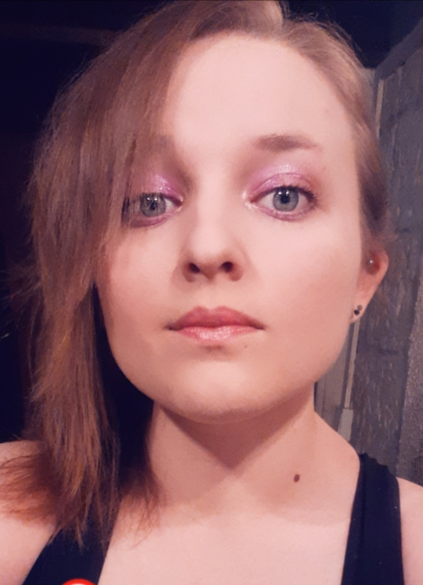

Développeuse full-stack de 28 ans, je suis dans le domaine depuis peu après une reconversion
professionnelle.
Technicienne en biologie de base, j'ai découvert le développement web en 2017 et ai décidé de m'y
former afin d'en faire mon métier.
J'ai pu découvrir de nombreuses technologies durant ma deuxième année de formation en apprentissage
au sein d'une entreprise de e-commerce et j'y ai approfondi ma passion pour le développement web, en
particulier le front-end.
Je suis aujourd'hui à la recherche d'opportunités dans le développement front-end et
l'international m'attire énormément. Je prends des cours d'anglais pour le passage de la certification B2 First,
anciennement Cambridge English afin de m'améliorer.
Je suis motivée, je sais travailler aussi bien en toute autonomie qu'en équipe et je m'adapte facilement à un nouvel environnement.
J'ai un fort intérêt pour le développement web, l'informatique dans sa globalité et les sciences de manière générale. Je fais donc mon possible pour toujours connaître les dernières actualités.